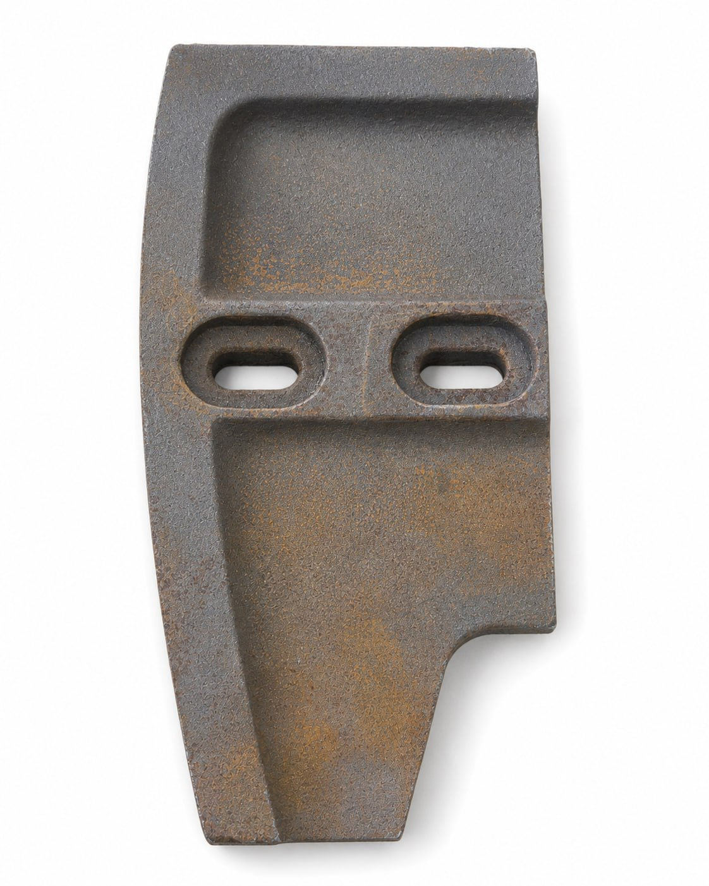

Что важно сверить
Сторону установки и геометрию лопасти нужно проверять по фото детали и модели смесителя. Публичная совместимость не заявляется без сверки.
SEO-каталог
Лопасти смесителя Simem MSO-1500 и изнашиваемые детали. Подбор по стороне установки, модели смесителя, фото детали и шильдику оборудования.

| Позиция | Артикул / код | Продажа |
|---|---|---|
| Левая боковая лопасть для смесителя Simem MSO-1500 | MSO-1500 | КП по запросу |
Сторону установки и геометрию лопасти нужно проверять по фото детали и модели смесителя. Публичная совместимость не заявляется без сверки.
Если деталь не определяется по названию, пришлите фото узла или шильдика. По ним можно понять группу детали, размер, код и применимость.
Не открывается затвор БСУ · Не работает вибратор бункера · Износ лопастей смесителя